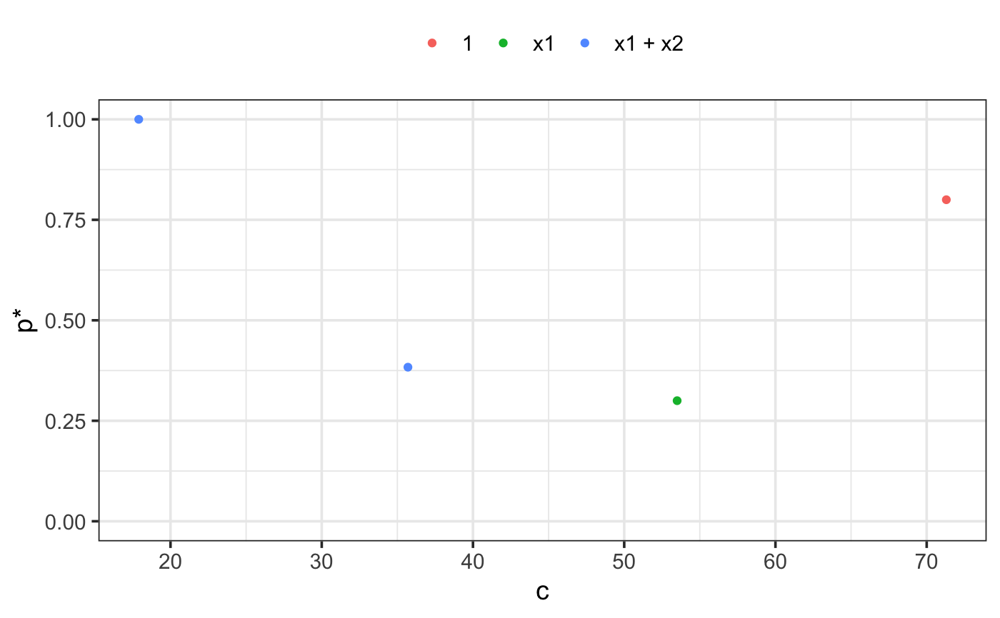

This function implements the adaptive fence procedure to first find the optimal cstar value and then finds the corresponding best model as described in Jiang et. al. (2009) with some practical modifications.
af(
mf,
B = 60,
n.c = 20,
initial.stepwise = FALSE,
force.in = NULL,
cores,
nvmax,
c.max,
screen = FALSE,
seed = NULL,
...
)| mf | a fitted 'full' model, the result of a call to lm or glm (and in the future lme or lmer). |
|---|---|
| B | number of bootstrap replications at each fence boundary value |
| n.c | number of boundary values to be considered |
| initial.stepwise | logical. Performs an initial stepwise procedure to look for the range of model sizes where attention should be focussed. See details for implementation. |
| force.in | the names of variables that should be forced into all estimated models |
| cores | number of cores to be used when parallel processing the bootstrap |
| nvmax | size of the largest model that can still be considered as a viable candidate. Included for performance reasons but if it is an active constraint it could lead to misleading results. |
| c.max | manually specify the upper boundary limit.
Only applies when |
| screen | logical, whether or not to perform an initial screen for outliers. Highly experimental, use at own risk. Default = FALSE. |
| seed | random seed for reproducible results |
| ... | further arguments (currently unused) |
The initial stepwise procedure performs forward stepwise model
selection using the AIC and backward stepwise model selection
using BIC. In general the backwise selection via the more
conservative BIC will tend to select a smaller model than that
of the forward selection AIC approach. The size of these two
models is found, and we go two dimensions smaller and larger
to estimate a sensible range of c values over which to
perform a parametric bootstrap.
This procedure can take some time. It is recommended that you start
with a relatively small number of bootstrap samples (B)
and grid of boundary values (n.c) and increase both as
required.
If you use initial.stepwise=TRUE then in general you will
need a smaller grid of boundary values than if you select
initial.stepwise=FALSE.
It can be useful to check initial.stepwise=FALSE with a
small number of bootstrap replications over a sparse grid to ensure
that the initial.stepwise=TRUE has landed you in a reasonable
region.
The best.only=FALSE option when plotting the results of the
adaptive fence is a modification to the adaptive fence procedure
which considers all models at a particular size that pass the fence
hurdle when calculating the p* values. In particular,
for each value of c and at each bootstrap replication,
if a candidate model is found that passes the fence, then we look to see
if there are any other models of the same size that also pass the fence.
If no other models of the same size pass the fence, then that model is
allocated a weight of 1. If there are two models that pass the fence, then
the best model is allocated a weight of 1/2. If three models pass the fence,
the best model gets a weight of 1/3, and so on. After B bootstrap
replications, we aggregate the weights by summing over the various models.
The p* value is the maximum aggregated weight divided by the number of bootstrap
replications.
This correction penalises the probability associated with the best model if
there were other models of the same size that also passed the fence hurdle.
The rationale being that if a model has no redundant variables
then it will be the only model at that size that passes the fence over a
range of values of c.
The result is more pronounced peaks which can help to determine
the location of the correct peak and identify the optimal c*.
See ?plot.af or help("plot.af") for details of the
plot method associated with the result.
Jiang J., Nguyen T., Sunil Rao J. (2009), A simplified adaptive fence procedure, Statistics & Probability Letters, 79(5):625-629. doi: 10.1016/j.spl.2008.10.014
Jiang J., Sunil Rao J., Gu Z, Nguyen T. (2008), Fence methods for mixed model selection, Annals of Statistics, 36(4):1669-1692. doi: 10.1214/07-AOS517
n = 100
set.seed(11)
e = rnorm(n)
x1 = rnorm(n)
x2 = rnorm(n)
x3 = x1^2
x4 = x2^2
x5 = x1*x2
y = 1 + x1 + x2 + e
dat = data.frame(y,x1,x2,x3,x4,x5)
lm1 = lm(y ~ ., data = dat)
# \dontshow{
af1 = af(lm1, cores = 1, B = 5, n.c = 5, seed = 1)
summary(af1)
#>
#> Call:
#> af(mf = lm1, B = 5, n.c = 5, cores = 1, seed = 1)
#>
#> Adaptive fence model (c*=17.9):
#> y ~ x1 + x2
#>
#> Model sizes considered: 1 to 7 (including intercept).
#>
plot(af1)

# }
if (FALSE) {
af1 = af(lm1, initial.stepwise = TRUE, seed = 1)
summary(af1)
plot(af1)
}